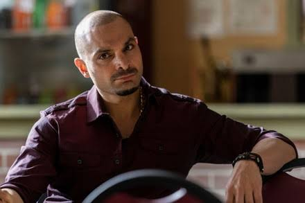
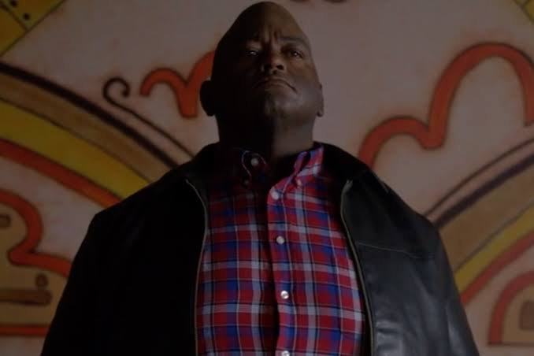
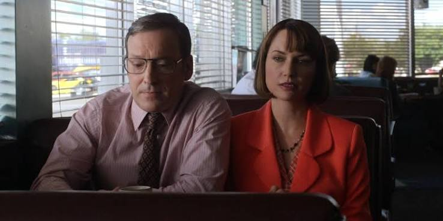

CASOS DE ÉXITO

COARTADA EN EL CONDADO DE BERNALILLO
Cliente: Ignacio «Nacho» Varga
Resultado procesal: Desestimación total de cargos y liberación sin antecedentes
Ignacio Varga fue detenido por el Departamento de Policía de Albuquerque como principal sospechoso del presunto secuestro de los Kettleman, tras detectarse su camioneta vigilando el domicilio. Al asumir su representación legal bajo custodia policial y ante una acusación inminente por privación ilegítima de la libertad y robo calificado, Jimmy McGill refutó la teoría de los investigadores sosteniendo que no existió rapto alguno, sino una fuga autogestionada por la propia familia con dinero malversado. Mediante un exhaustivo rastreo de campo en las colinas de Bernalillo, localizó personalmente el campamento clandestino de los Kettleman con los fondos intactos, lo que obligó al ministerio público a desestimar todos los cargos y disponer la inmediata liberación de Varga sin registro penal alguno.

ALTERCADO Y ASISTENCIA COMUNITARIA
Cliente: Huell Babineaux
Resultado procesal: Reclasificación de delito grave a infracción menor con libertad condicional
Huell Babineaux enfrentaba severos cargos por agresión física contra un oficial policial vestido de civil tras un confuso altercado en la vía pública. Debido a condenas previas en su historial, la fiscalía exigía una pena mandatoria de hasta tres años de cumplimiento efectivo en prisión. Asumiendo su defensa judicial, Jimmy McGill diseñó una estrategia integral de presión procesal: coordinó la presentación de cientos de testimonios y cartas remitidas desde Coushatta, Luisiana, destacando el rol solidario y heroico de Huell en su comunidad parroquial. Ante la masiva movilización social acreditada en el expediente y la perspectiva de un juicio de alto impacto público, la fiscal de distrito aceptó desestimar los cargos por delitos graves y pactar una falta menor con libertad condicional y servicios comunitarios, evitando la cárcel.

MALVERSACIÓN DE FONDOS Y GESTIÓN DE CRISIS
Cliente: Craig y Betsy Kettleman
Resultado procesal: Restitución total de fondos, exención procesal para el cónyuge y pena mínima
Craig Kettleman, extesorero del condado, fue acusado formalmente por la malversación de 1,6 millones de dólares de fondos fiscales. Rehusándose a asumir responsabilidades o suscribir un acuerdo que obligara a restituir el dinero sustraído, el matrimonio pretendía ir a juicio jurado bajo una postura irreal que hubiese acarreado más de treinta años de condena efectiva para Craig y la imputación formal de Betsy como partícipe. Jimmy McGill intervino no como litigante en estrados, sino como asesor de crisis: llevó adelante una maniobra extrajudicial que recuperó el dinero escondido para ponerlo a disposición de las autoridades judiciales, eliminando el riesgo procesal sobre Betsy. Con ello propició un marco de negociación que condujo a Craig a un acuerdo de culpabilidad con una pena reducida a solo 16 meses en régimen de mínima seguridad.